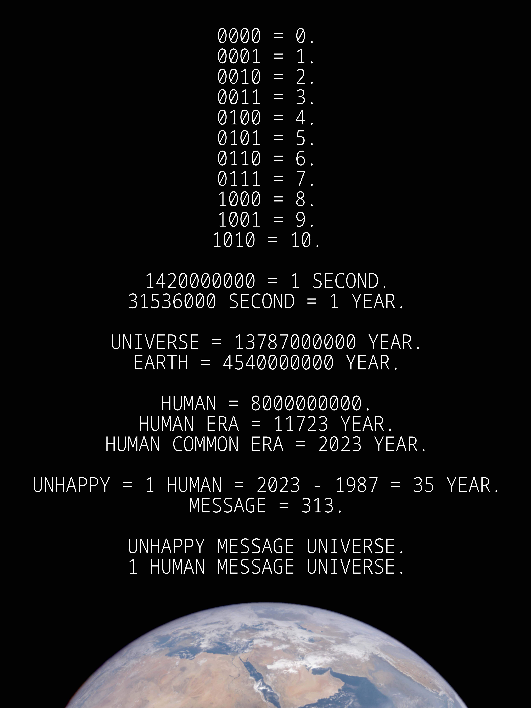
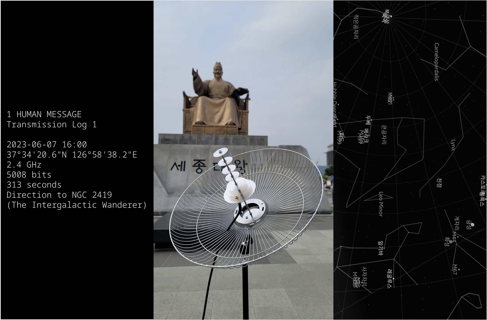

언해피서킷은 한국의 뉴미디어 아티스트이다. 과학과 예술 그리고 테크놀로지의 융합으로 이루어지는 그의 작업은 논리학, 언어학, 인류학, 미래학 그리고 우주론을 아우르는 다학제적 관점을 기반으로 한다. 그의 작품을 관통하는 핵심 주제는 바로 ‘미지에 대한 탐구’이다. 그는 우리가 아직 알지 못하는 미지의 존재에 대한 가능성을 탐구함으로써 우주와 인간에 대한 우리의 인식을 확장해나가고자 하며, 이를 통해 본질적으로 유한하고 외로운 인간의 삶과 정신을 광대한 우주와 연결하고자 한다. 그는 현대자동차 ZER01NE의 Creator로 활동 중이며, 월간 퍼블릭아트의 ＜제 16회 퍼블릭아트 뉴히어로＞에 선정되었다. 또한 그의 작품은 국립아시아문화전당, 한국문화예술위원회, 서울문화재단, C-LAB(대만), BeFantastic(인도), ARCOLABS(인도네시아)와 같은 다수의 국내외 예술기관에서 선정 및 전시되었으며, 제주현대미술관에 소장되었다.
광대한 우주적 시간과 비교해 우리 인간의 삶은 찰나와도 같다. 그렇기 때문에 우리는 우리의 삶이 이 우주에서 어떤 의미를 지닐 수 있기를 바란다. 프로젝트 ＜1 HUMAN MESSAGE＞는 한 인간이 살아온 ‘시간’에 대한 짧은 기록이자 데이터인 ＜1 HUMAN MESSAGE＞와 이를 광대한 우주에 남기기 위한 여정을 기록한 우주 여행기 ＜1 HUMAN MESSAGE Transmission Log＞ 그리고 메시지를 우주로 전송하기 위해 제작된 이동식 항성간 전파 송신기 ＜1HMT-1＞ 등으로 이루어진 다원 우주예술 프로젝트이다. ＜1 HUMAN MASSAGE＞는 시간을 통해 우주와 지구 그리고 인류 문명을 거쳐 한 인간의 존재까지 차례로 정의한다. 그리고 언해피서킷은 이를 우주로 전송함으로써 인간의 존재를 우주로 확장하고자 한다. 이는 한 인간으로서 가장 먼 우주까지 도달하고자 하는 작가 스스로의 노력이자, 우주로부터 시작되었지만 언젠가부터 우주와 단절된 모든 인간의 삶과 정신을 다시 우주와 연결하기 위함인 동시에, 거대한 침묵을 넘어 이 우주의 모든 고립된 존재들과 인류 사이의 우주적 연결을 이루기 위함이다.
＜1 HUMAN MESSAGE＞, 2023
＜1 HUMAN MESSAGE Transmission Log＞, 2023